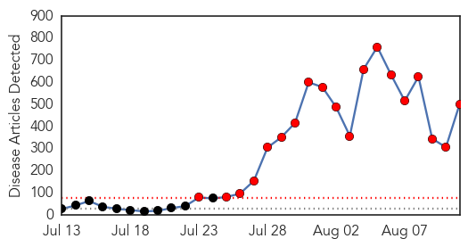

Mumps
30-Day Web Trend
30-Day Twitter Trend
0 alerts, 0 warnings

Article Locations


Article Confidences

Top Articles:
-
No articles found for Aug 11, 2014
Top Tweets:
-
No tweets found for Aug 11, 2014
Ebola
30-Day Web Trend
19 alerts, 0 warnings

30-Day Twitter Trend
11 alerts, 0 warnings

Article Locations

Article Confidences

Top Articles:
- 1.000
- East African nations on high alert for Ebola
- 1.000
- International emergency declared in Ebola outbreak
- 1.000
- Another Ebola Victim Surfaces, as Does Potential Patient Zero
- 1.000
- Nigeria Confirms 10 Ebola Cases
- 1.000
- International cooperation crucial to block spread of fatal Ebola virus
- 1.000
- A look at what is scary about Ebola and reasons not to fear it
- 1.000
- Reasons not to fear Ebola virus
- 1.000
- Ebola Vaccine Trials Set to Begin in September
- 1.000
- What's scary about Ebola, reasons not to fear it
- 1.000
- Nurse Is Nigeria's 10th Case of Ebola
- 1.000
- Nigeria Confirms 10 Ebola Cases
- 1.000
- WHO declares Ebola epidemic a global emergency
- 1.000
- WHO declares Ebola epidemic a global emergency
- 1.000
- Ebola’s New Status As WHO Declares It A Global Emergency
- 1.000
- What's so scary about Ebola?
- 1.000
- Tracing Ebola's Breakout to an African 2-Year-Old
- 1.000
- Nurse Is Nigeria's 10th Case of Ebola
- 1.000
- 'Vaccine for Ebola to trial next month may be ready by 2015'
- 1.000
- Nurse Is Nigeria's 10th Case of Ebola
- 1.000
- Nurse Is Nigeria's 10th Case of Ebola
- 1.000
- President apologises to Liberia's health workers
- 1.000
- Nigeria's Lagos now has 10 Ebola cases
- 1.000
- Gulf Daily News Local News Bahrain steps up Ebola screening
- 1.000
- Ebola Grips West Africa
- 1.000
- What's scary about Ebola, reasons not to fear it
- 1.000
- Battle to contain Ebola intensifies, Nigeria seeking volunteers
- 1.000
- Guinea shuts borders with Sierra Leone, Liberia in bid to halt Ebola
- 1.000
- Nurse Is Nigeria's 10th Case of Ebola
- 1.000
- Nigeria Confirms 10 Ebola Cases
- 1.000
- Liberian doctors to get experimental Ebola drug
- 1.000
- Liberian doctors to get experimental Ebola drug
- 1.000
- Liberian doctors to get experimental Ebola drug
- 1.000
- Ebola vaccine could be 'rushed through to be ready by 2015'
- 1.000
- The most from the coast
- 1.000
- Ghana, Business Advice, Jobs, News, Business Directory, Real Estate, Finance, Forms, Auto
- 1.000
- Nigeria Confirms 10 Ebola Cases
- 1.000
- Nigeria bars Gambia’s national airline over its Ebola measures
- 1.000
- Nigeria confirms new case
- 1.000
- ‘Ebola vaccine could be rushed through for 2015’
- 1.000
- What’s scary about Ebola; reasons not to fear it
- 1.000
- Ebola may be scary, but most shouldn't be afraid
- 1.000
- Nurses, doctors protect yourself against Ebola!
- 1.000
- Key Facts on the Ebola virus disease
- 1.000
- West Africa feels knock-on effects of battle against Ebola - Nigeria confirms new Ebola case in Lagos - Kuwait Times
- 1.000
- Ebola may be scary, but most shouldn't be afraid - MyNorthwest
- 1.000
- Spanish Ebola patient gets experimental drug
- 1.000
- Vietnam may send suspected samples to the US for Ebola testing
- 1.000
- Moldova Enhances Border Control to Protect from Ebola Virus
- 1.000
- Death toll from Ebola virus disease exceeds 1,000 in West Africa
- 1.000
- Experimental Ebola drug on its way to Liberia
Showing top 50 articles...
Top Tweets:
- 0.977
- RT: @Mz_cutielicious Because Ebola is overall so rare most "suspected cases" detected at airpot won't be Ebola.…
- 0.952
- RT: Nigeria's health minister has confirmed ten cases of the Ebola virus in Lagos - all had come into contact with the Liberi…
- 0.942
- RT: "@ebiokon: @EbolaAlert EbolaChat Ebola who should get tested for Ebola? Where?"
- 0.914
- RT: @EbolaAlert can one contact Ebola through money handled by a person with the virus? EbolaChat
- 0.905
- RT: @EbolaAlert can someone who has recovered from being sick with the Ebola virus be reinfected by it? ebolachat
- 0.893
- RT: @EbolaAlert Is the ZMAPP a vaccine or drug for curing the Ebola? EbolaChat
- 0.893
- RT: "@IbnIdrees14: @ikeanya is the ZMAPP a vaccine or drug for curing the Ebola EbolaChat
- 0.822
- RT: @EbolaAlert is Guinea Pig among the transmitters of the Ebola? ebolachat
- 0.814
- RT: Please treat everyone as suspect to avoid the spread of Ebola EbolaChat
- 0.782
- RT: "@biskits_n_gravy: @SatishKTM Ebola is considered a BSL-4 pathogen because no vaccine exists (yet) and causes high morbidit…
- 0.760
- RT: We shall be taking questions surrounding the myths and facts around Ebola virus disease in 5 minutes. EbolaChat
- 0.749
- RT: @ibrodoc_03 Sitrep more complex in Africa b/c many VHFs besides Ebola?…
- 0.719
- RT: DO NOT bathe in salt water or drink it to prevent ebola! That is very dangerous especially if you are hypertensive! ebolac…
- 0.710
- RT: @EbolaAlert Swines can naturally carry and transmit Ebola Reston which does not cause disease in humans.
- 0.670
- RT: How have the neighbors of the 4 West African countries kept Ebola away or r they just not reported yet? Ebolachat…
- 0.647
- RT: "@biskits_n_gravy: @_RyanMUFC92 Because Ebola can have a long incubation period theoretically someone infected could…
- 0.623
- RT: @EbolaAlert why are Countries calling 4 ban on flights from west African countries with the virus if it cant spread vi…
- 0.614
- RT: Ebola a huge risk in W. Africa. I share what CDC is doing to stop the outbreak where it starts in piece: htt…
- 0.591
- RT: "@WHO: @biskits_n_gravy Ppl shld not travel if they hv had contact w/someone who had Ebola symptoms in the previous 21d" …
- 0.557
- RT: Undercooked infected bat and primate (bush) meat transmits the virus to humans EbolaChat
- 0.553
- RT: Salt and water & kolanut DO NOT prevent or cure ebola! Prevention by Handwashing with soap helps ebolachat
- 0.553
- RT: @tweeenz well for this strain of ebola no proof of any kind concerning immunity has been established.
- 0.535
- RT: "@WHO: @biskits_n_gravy Ppl who hv Ebola symptoms must be isolated and certainly should not travel or go out in public" …
- 0.525
- RT: "@WHO: @ikeanya As far as we know there is no such case Ebola"…
- 0.515
- RT: For the Togolese in the house those were rumors: Les autorités nient la découverte de cas suspects d’Ebola au Togo…
- 0.503
- RT: The salt & water myth may have killed more people than Ebola! Call and educate your relatives & friends not 2 do it ebol…